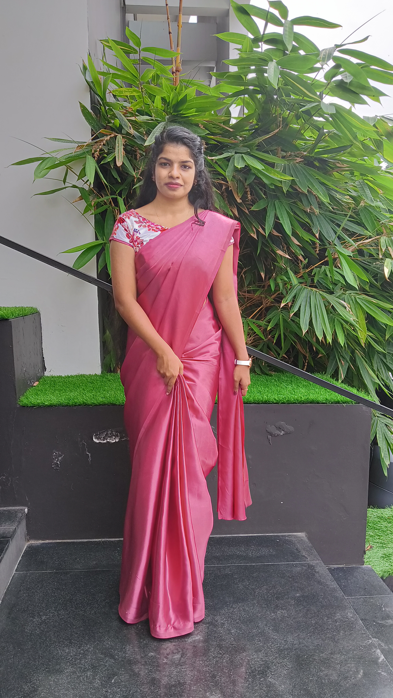

Hi,
I am Vaishnavi, and I am from Thiruvananthapuram. I have pursued a B.Com degree from Mar Gregorious Memorial College of Arts & Science.
I am a bit of a bookworm, I love reading anything and everthing. Aside from that you may find me dancing in my free time as I am a Professional classical dancer. Dancing is my passion and also my part time career.
I was in respectable positions in my school and college and have managed several events as well. I was also the general secretary of the commerce department in 2019-20 and was responsible for arranging seminars, fests, and other departmental events along with my team.
If I had to describe myself in one word, it would be dynamic as I accept challenges with a positive spirit, and I am always eager to learn.
